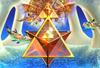
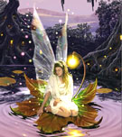
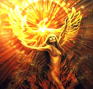
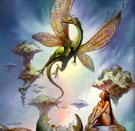
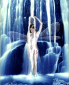
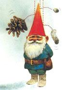
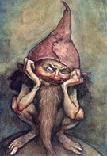

El Reino Elemental es un Reino inteligente y amoroso que convive con los
seres humanos en esta bendita Tierra. En la antigüedad se dividió el mundo
en cuatro principios básicos o "elementos": tierra, agua, fuego, y aire.
Aire, Agua, Fuego y Tierra son los 4 Elementos y se pueden definir como las
energías arquetípicas que tienen su efecto en nuestro ser, nuestra
conciencia y forma de entender el mundo. La mayor o menor influencia de un
elemento, modifica o influye en el temperamento y la vida misma de cada
ser. En la actualidad gracias al despertar de conciencia volvemos a
realizar una comunicación y comunión con ellos, considerándolos ahora como
cinco elementos: Agua, Tierra, Aire, Fuego y Akasha (Espíritu).
Elemento Aire
La energía del aire en el planeta es muy sutil, es de las más elevadas que
existen, y cuando la invocamos entra a nuestro ser y nos ayuda a que
nuestra energía se active más y a que nuestra vibración suba. Si
estuviéramos habituados a observar la energía de la cosas veríamos a los
elementales del ... aire,
estos seres hermosísimos, que en general son
representados como seres con alas, como las mariposas, las libélulas y las
hadas, que son parte de esa energía. Aunque en realidad no tienen alas sino
un halo de energía de muy alta vibración que les permite desplazarse por su
elemento aire. Precisamente esa energía luminosa que los traslada a ellos
es la que jalamos cuando los llamamos por medio del incienso. Estos
elementales habitan en los árboles, sobre todo en los lugares donde no hay
postes de electricidad o casas cercanas. También los podemos encontrar en
las flores, donde se confunden con las luciérnagas por la energía que
destellan.
En el campo o bosque la mayoría hemos visto chispas de luz y no les hacemos
caso porque pensamos que son una visión, pero son ellos. Lo más parecido a
estos elementales son los colibríes, que son los animales que tienen una
vibración similar a la de estos seres. A estos seres elementales les
encantan las fuentes de agua, y los cristales.
Los seres elementales del aire son denominados Sílfides, Céfiros y Hadas.
Habitan el mundo de los árboles, flores, vientos, brisas y montañas. Estos
seres son atraídos por los perfumes de aceites esenciales e inciensos.
Vibran en la frecuencia del color amarillo, se alinean con el punto
cardinal del este, y con la estación de la primavera.
Hadas

Son pequeños seres luminosos que aparecen frecuentemente en los bosques
profundos, las aguas de los arroyos y los centenarios árboles y llevan una
varita que despiden infinidad de chispas luminosas. Han estado presentes en
nuestra cultura desde tiempos inmemorables.
Hada significa encantamiento y se representa como un ser pequeño y
sobrenatural que posee poderes mágicos e intercede para bien o para mal en
nuestros asuntos. Se desconoce su origen cultural, pero en la Edad Media
van adquiriendo la forma que ha llegado a nuestra época.
Desde tiempos ancestrales, en todas las tradiciones de todos los pueblos
del mundo entero se ha creído en la existencia de estos seres.
Su corporeidad es muy particular “sensible y fluida, puede ser moldeada por
cosas tan tenues como el pensamiento”. Por razón de la naturaleza de su
estructura etérea, el hada puede variar de tamaño a voluntad”. “Para
adoptar una nueva forma, el hada ha de concebirla con claridad y fijarla
firmemente en su conciencia, pues tan pronto como abandona la idea, vuelve
a su primitivo estado normal”.
La función general de las hadas es absorber PRANA o vitalidad del sol y
distribuirla entre lo físico. O sea, que viene a ser un enlace entre el
mundo invisible y el mundo visible.
Las Hadas son las que en el nacimiento de los niños, se acercan a sus cunas
para concederles dones y alejar otros seres que pueden asustarlos.
Elemento Fuego
Es el elemento tanto de la creación como de la destrucción. Así como el
fuego destruye árboles, nueva vida puede crecer en su lugar. A este
elemento se lo considera el dador de vida, de fuerza, de movimiento, y rey
de los demás elementos. Los seres elementales del fuego son denominados
Salamandras, Dragones y Genios. Son atraídos por velas o lámparas,
inciensos y fuego. Los colores con los que vibran son el blanco y el rojo.
Están alineados con el punto cardinal del sur y con la estación del verano.
Los elementales del fuego también tienen su hogar en las entrañas de la
Tierra, en mundos donde no hay calor como pensamos, en realidad son
ciudades de fuerza grandísima. Ellos son seres de energía hermosa que
ayudan a este planeta y a cada uno de los seres vivos que nacemos para que
llevemos ese fuego dentro.
El fuego es uno de los elementos que mejor nos ayuda a activar nuestra
energía, a acabar con lo negativo y a sacar esa fuerza para lograr lo que
deseamos. Por ello este elemento era muy valorado por los antepasados de
Mezo América, quienes hacían uso del temascal como un viaje mágico en el
que se podía llegar a las profundidades de nuestro ser y a las
profundidades del universo. Nuestros ancestros, además, hacían rituales
alrededor del fuego por todo lo que les proporcionaba y les ayudaba a
transmutar.
Salamandras

Las salamandras son criaturas que inspiran en todas las demás temor y
respeto. Habitan el interior mismo del fuego y son capaces de producirlo y
protegerlo. Las leyendas les atribuyen la capacidad de poder sofocar un
incendio o la lava arrojada por un volcán en erupción. De todos los seres
elementales, las salamandras son los seres que menos relación mantienen con
los humanos, sin embargo, cuando esto llega a producirse, se establecen
lazos muy difíciles de romper. Los seres del fuego son sabios y astutos.
Dragones

Los dragones alados son seres mágicos afines al fuego. Poseen la capacidad
de elevarse y son muy temidos por todos los elementales. Sólo una
salamandra puede hacerles frente. Un dragón de buen humor también puede ser
bondadoso, pero si se encuentra ofuscado los destrozos que pueden generar,
lanzando torrentes de fuego, son importantes.
Elemento Agua
El elemento agua está relacionado con la inspiración espiritual, con la
meditación, los estados de trance y la imaginación creativa. La literatura,
los cuentos y la pintura nos ayudan a entrar en contacto con el elemento
agua, percibiendo la realidad de diferentes maneras.
Es el elemento de los sentimientos, las emociones, el amor, los sueños, el
inconsciente y el poder de la intuición. Nos habla del corazón mismo del
ser humano; de los deseos y temores ocultos en el fondo del lago. Trabajar
con el agua es atreverse a sumergirnos y descubrir lo que hay en el fondo
de nuestro corazón, Es dejarnos llevar por la intuición y percibir los
sutiles cambios de la naturaleza. Cuando despertamos a los seres
elementales de las aguas en nuestro interior estamos creando un lago mágico
al cual acudir a pedir deseos, hacer consultas, pedir orientación mágica y
espiritual; enfrentar a los monstruos que duermen bajo el agua y observar
nuestro reflejo.
Los elementales del agua siempre han tenido mucho que ver con la
purificación, como los veían nuestros antepasados, además de ser la vida
para nosotros y para el universo. Sus elementales están en cualquier gota,
así como en los ríos y arroyos, pero las ciudades más grandes están en el
mar. Los animales marinos tienen un grado de evolución bastante elevado,
como los delfines, las ballenas, que son los seres que más tienen que ver
con nosotros como personas. De verdad que todos los animales son sagrados,
pero algunos mamíferos marinos tienen una energía muy alta que nos ayuda en
nuestras energías. Ellos hacen rituales mágicos para el bien de este
planeta en conjunción con los seres que viven en la superficie.
En estas ceremonias se mueve una energía muy grande que también busca darle
equilibrio a nuestra Madre Tierra. Ellos tienen un lenguaje, el canto con
el que se comunican, que es de una vibración altísima y que cuando lo
escuchamos activa toda nuestra energía y actúa sobre nuestro cuerpo físico
y astral. Además, establecemos una comunicación con ellos que no detectamos
conscientemente, pero en otro nivel están tratando de informarnos de
diferentes cosas importantes para el planeta y para nosotros como personas.
Los seres elementales del agua son denominados Ninfas, Ondinas, Sirenas y
Tritones, que moran en el mar, lagos, arroyos y manantiales, y las hadas de
los lagos estanques y arroyos. Son atraídos por el agua, las lociones,
soluciones, colonias y perfumes. Los colores con los que vibran son el gris
o el azul, están alineados con el oeste y con la estación del otoño.
Ninfas
El nombre de “ninfa”, significa “mujeres jóvenes casaderas, novias” y son
los seres que habitan en la naturaleza. Son tenidas habitualmente por hijas
de Zeus y personifican la fuerza natural que preside la reproducción y
fecundidad de la naturaleza. Su vida, a diferencia de las mujeres griegas,
gira alrededor de las pasiones y los sentimientos.
Ondinas

Las Ondinas viven en el agua dulce: lagos, ríos, cascadas.
No tienen cola como los peces, son muy bellas y cubren su cuerpo con
vestidos de gasa. Existe un grupo de ondinas que poseen alas las que les
ayudan a elevarse en el aire. Las Ondinas a veces hechizan a los hombres o
pescadores que se les acercan con su hermosa voz (cantando canciones que
hipnotizan a los marineros). La función que ellas tienen es librar de
contaminación el lugar donde habitan.
Tritones
Señores del océano, los tritones están profundamente arraigados en la
tradición de marineros y amantes del mar. Muchos se han extasiado y han
sido llevados a su perdición por tritones Oscuros, y las historias de las
personas que son salvadas por delfines también son producto de este linaje.
Luminosos u Oscuros, todos los tritones son sumamente propensos a emociones
fuertes. Suyo es el profundo misterio del océano, y la terrible furia de
sus tormentas.
Elemento Tierra
El elemento tierra es el de más baja vibración de todos los elementos y por
esa causa es el que permite las materializaciones. Los elementales de la
tierra son parecidos a los seres humanos aunque viven en mundo subterráneos
diversos a los nuestros. Ellos habitan en lugares fabulosos y su existencia
es una de las formas en que este planeta logra tener su eje. Sus ciudades
inmensas se localizan en las entrañas de la Tierra y algunas son de
cristales de cuarzo. Esos mundos internos son verdaderamente mágicos y
hermosos, igual que sus habitantes, quienes trabajan mucho para darle
equilibrio al planeta. Para llegar a ellos hay muchos accesos,
desgraciadamente no están abiertos para nosotros porque las vibraciones que
ahí se encuentran son totalmente diferentes a las nuestras. En cambio
nuestros antepasados sí podían entrar y hasta recoger las rocas o minerales
que necesitaban para sus construcciones o protecciones. Para ellos estaban
abiertos porque vivían en una comunión completa con la naturaleza y porque
tenían un respeto muy grande hacia lo que les rodeaba. Pero cuando todo se
fue por otros caminos, cuando se perdió el respeto por la naturaleza, estos
mundos se cerraron automáticamente. Los seres que viven ahí, así como los
elementales, son maestros que tienen misiones que cumplir también fuera del
centro de la Tierra, ya que nos ayudan y guían para continuar la vida en
este lugar. De vez en cuando salen y nos traen elementos de energía que nos
ayuda, sobre todo contactan con los indígenas o tribus, con quienes viven
en comunión. Ellos llegan y les enseñan como manejar la energía para darle
más equilibrio al mundo. En nuestro caso, cuando llamamos a estos seres de
la tierra, al ser parte de este planeta, recibimos la energía que nos
mandan y nos sirve como protección y para limpiar nuestra energía. Cada uno
puede experimentar esto con oraciones o meditaciones, podemos llamarlos y
pedir permiso para entrar a sus mundos, o que al menos para sentir que
están aquí, que nos son una fábula, sino tan reales como nosotros. Es vital
unirnos a ellos y comunicarnos, hacerles ver que los sentimos y que
queremos conocerlos para compartir energía. Ese viaje y contacto mágico lo
podemos tener si nos unimos a ellos por medio de los cristales, también
podemos usar plantas.
Los seres elementales de la tierra son denominados Gnomos, Duendes y
Enanos, los que habitan en el interior de la Tierra. Ellos protegen la
conciencia de las piedras preciosas, los minerales y de toda la tierra
misma. Estos seres son atraídos por sales y polvos. Vibran en la frecuencia
de los colores verdes, o negro, se alinean con el punto cardinal norte y
con la estación del invierno.
Gnomos

Los Gnomos son seres diminutos, miden entre 10 y 50 cm., puede que haya
otros un poco mas grandes, pero quizás vivan en zonas mas boscosas o
desconocidas. Se les atribuye poderes mágicos, esto es debido a que no
están atados a la forma racional de entender el mundo como los seres
humanos, conservan tradiciones de millones de años y su objetivo es el
ascenso espiritual, pero no como lo entendemos nosotros, sino por una
evolución de la conciencia como seres de luz acompañando a la tierra. Les
cuesta mucho el desarrollo, pero no dejan su camino, además su destino es
morir cuando la tierra muera. Por eso están en armonía con la tierra y sus
tesoros, tienen acceso a cualquier lugar del planeta, pueden divertirse con
la materia tanto como con sus usos y son tremendamente divertidos y
tímidos, pero cuando hacen amistad con un ser humano lo llenaran de regalos
constantemente, le traerán joyas, dinero, piedras, metales como oro, plata,
hierro, etc. Es común que las personas que trabajan con los gnomos tengan
mucha suerte en la calle encontrándose casi siempre algún objeto. Los
gnomos actúan de esa manera. Ellos saben dónde están los objetos que a las
personas les interesan y sutilmente los dejan en su camino para que esa
persona se los encuentre. Hasta es posible que sustraigan algún objeto con
tal de obsequiársela a la persona que sintoniza con ellos.
Duendes

Los duendes son seres sobrenaturales de estatura menuda variable entre los
30 cm. y el metro de altura. Tienen una actitud generalmente benévola con
los seres humanos, para los que realizan trabajos domésticos o en los
campos a cambio de un poco de comida. La mayoría de los duendes habitan en
el bosque, teniendo como vivienda el interior de algún árbol o, incluso, en
el subsuelo de la tierra, dentro de algún habitáculo o cavidad. Tienen
habilidades tales como mimetizarse, hacerse invisibles, pasar por el ojo de
la cerradura, imitar los sonidos de los animales y hacerse sentir, tocando
a un ser humano con sus manos, produciéndole un escalofrío. La naturaleza
de los duendes se reparte entre la del hombre y la del ángel, en partes
iguales, por ello pueden moldear sus cuerpos a su antojo. Están bien
provistos de poderes y talismanes para poder hacer toda clase de conjuros.